A mobile banking app for a CBN-licensed, healthcare-focused microfinance bank. Transfers, savings, cards and bills sit alongside HMO cover, a health wallet, a dietitian and rewards for healthy habits.
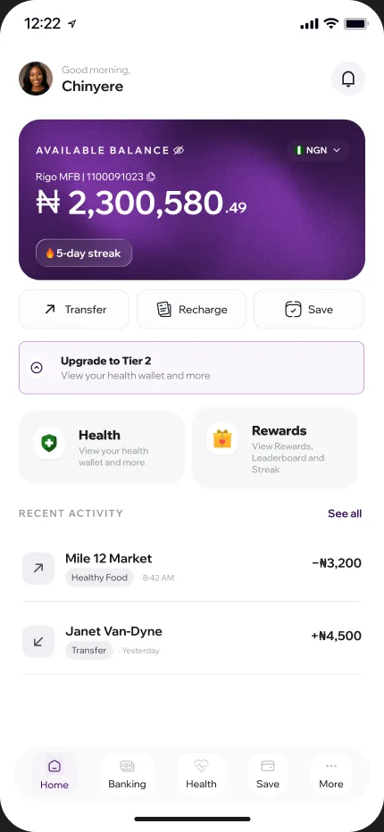
I design from the product team’s PRDs. A requirement like “add device verification” doesn’t say what happens on a second device, a failed OTP or a lost SIM, so my job is to find and design those cases. Then I check the built app against the designs before each release.
I proposed a firm rule, and the team adopted it into the PRD: the app collects health data but never shows a health score. The PRD added that it must never name a condition it suspects, and BMI is calculated behind the scenes only. A bank isn’t a doctor, and a wrong label on someone’s phone does real harm.
So I designed the health profile around what the app can do: notice, explain, and route people to a professional.
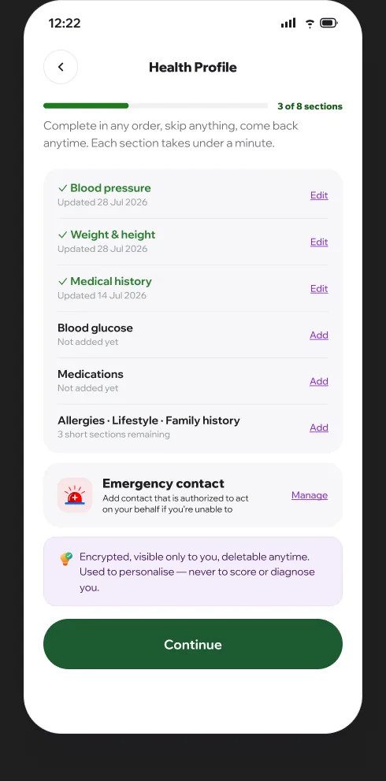
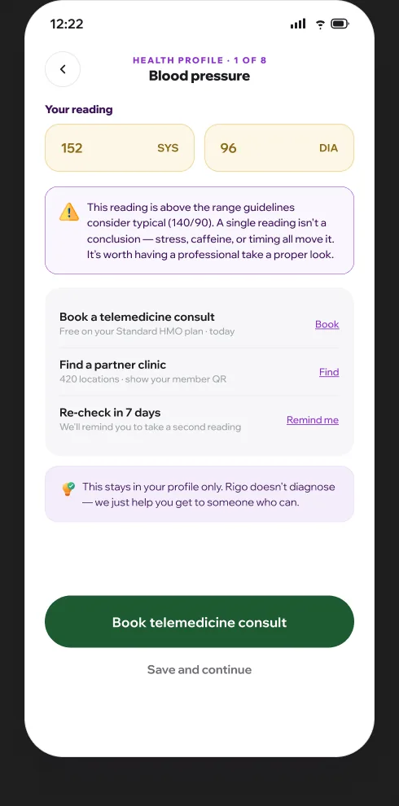
CBN rules require device verification and strong authentication. Each requirement adds a step a user can get stuck on, so I designed each one to be quick and to explain itself.
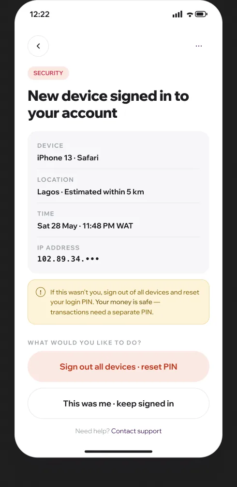
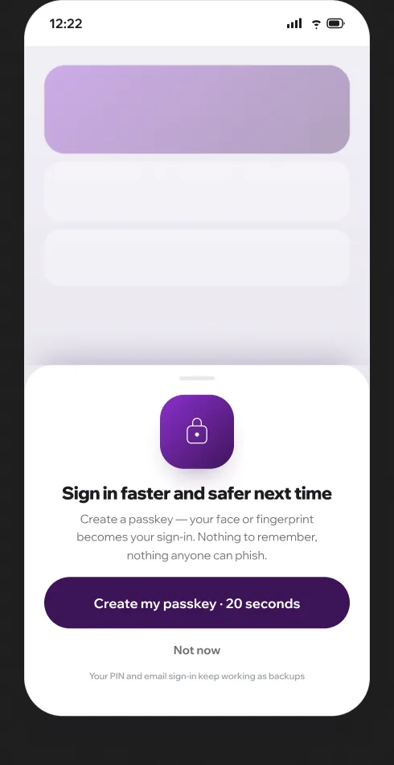
I built light and dark design systems as Tokens Studio tokens, so colour, type and spacing reach engineering as data rather than redlines. That cut design-to-development time by about 25%.
Before releases I run a live app vs. Figma audit: screenshots of the build next to the designs, each difference tagged by severity, so engineering fixes what matters first and drift doesn’t pile up.
Leadership wanted a community feature like Pacer: daily steps, challenges with friends and leaderboards. Pacer has no SDK we could embed, so we designed and built it ourselves, in two phases so the riskier social features could follow a solid private one.
Phase 1 is just you: today’s steps, a goal based on your own last 14 days, and self-challenges. The bank-specific idea is step-to-save: hit your daily goal and the app moves an amount you choose from your wallet into a savings goal. Walking and saving reinforce each other, and the rule sits alongside the user’s other auto-save rules.
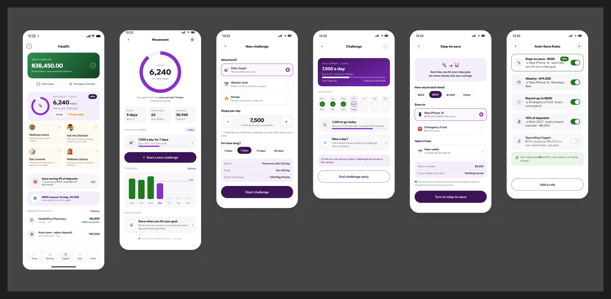
Phase 2 adds other people, opt-in and with a display name the user chooses. Challenges are live races with a points pot, a visible track and a one-tap cheer. Weekly leagues have promotion and demotion zones, so there’s always someone just ahead to catch. Daily quests and streaks give a reason to open the app on days without a race.
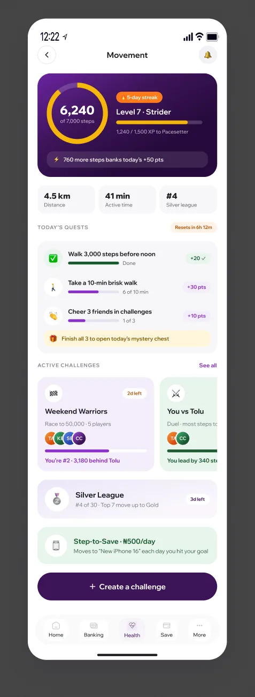
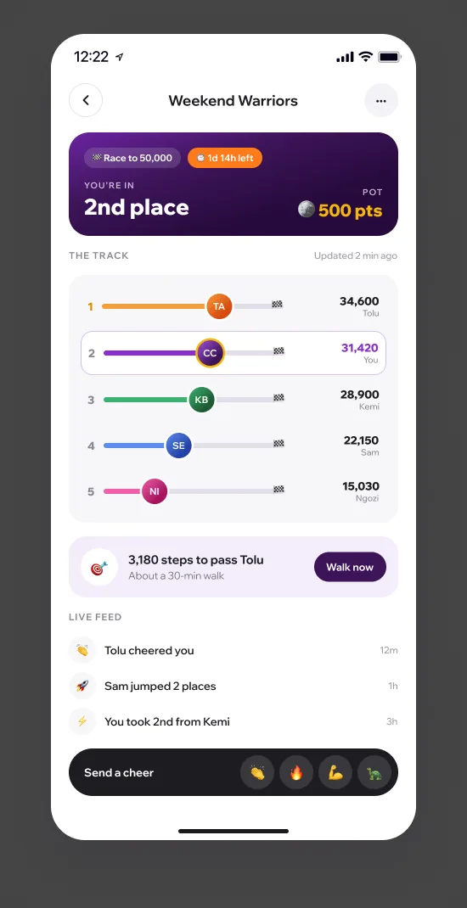
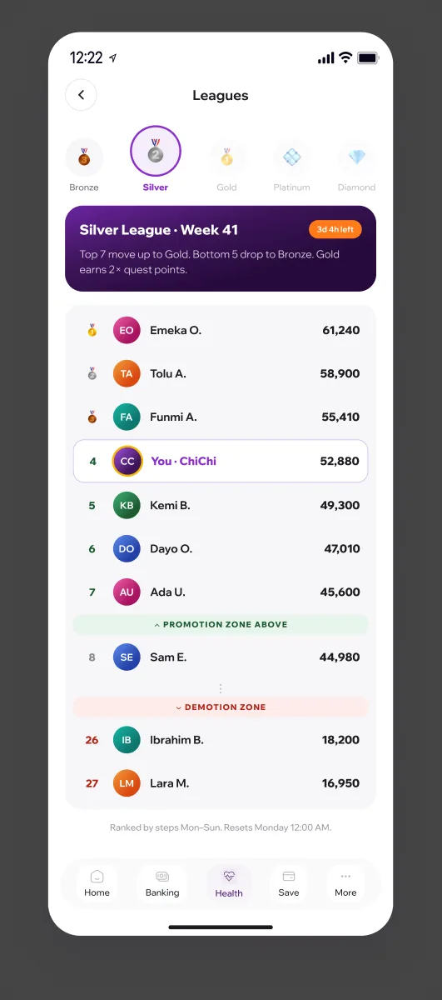
Challenges spread through invite links, but most people who get one don’t have the Rigo app. Asking them to install a banking app and complete KYC before they can take a walk would end most invites right there.
I proposed a web version that anyone with the link can join, and built it as a working prototype:
The nudge comes when the web user would actually benefit from the app, rather than as a wall in front of the challenge.
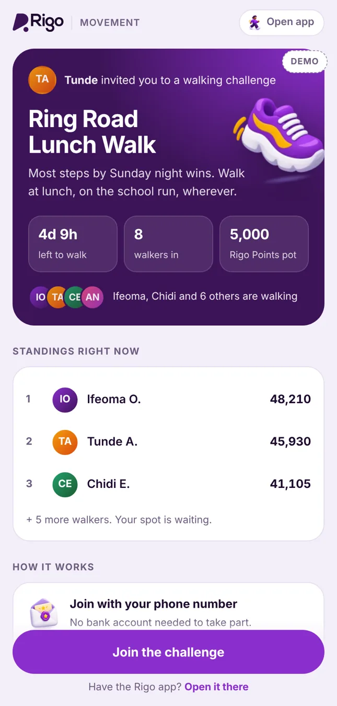
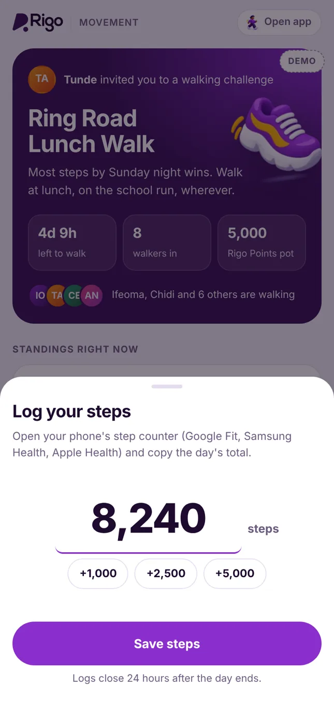
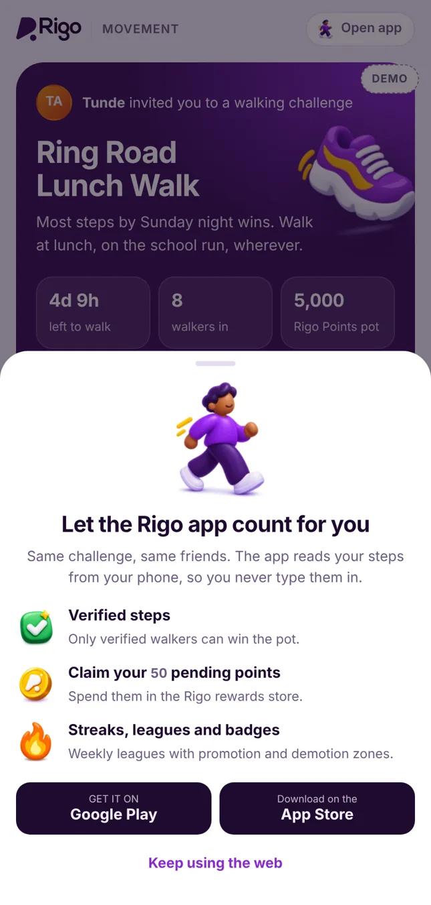
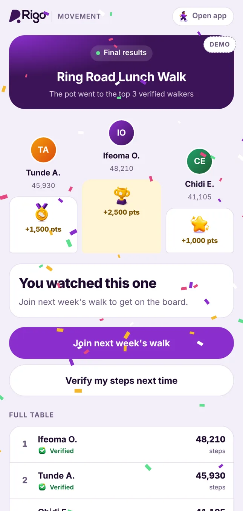
Everything here is designed and waiting to be built: 86 hi-fi screens across onboarding, transfers, savings, cards, KYC, HMO and support, plus the health profile, the security flows and both Movement phases. The Movement web version already runs as a working prototype.